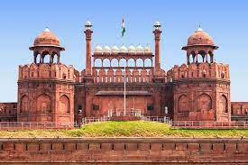
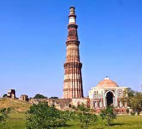
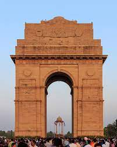

Tajmahal
The Taj Mahal is an ivory-white marble mausoleum on the south bank of the Yamuna river in the Indian city of Agra. It was commissioned in 1632 by the Mughal emperor, Shah Jahan
Charminar
It is a square shaped monument with four pillars, one on each side. The architectural design of Charminar is inspired from the Shia “tazias”.

Red Fort
The Red Fort Complex was built as the palace fort of Shahjahanabad,the new capital of the fifth Mughal Emperor of India, Shah Jahan.

Qutub Minar
One of the tallest minarets built in brick, the Qutub Minar stands tall at 72.5 metres. It is located in Mehrauli, South Delhi. It is also one of the tallest towers in a conical shape.

India Gate
At the centre of New Delhi stands the 42 m high India Gate, an "Arc-de-Triomphe" like archway in the middle of a crossroad. Almost similar to its French counterpart, it commemorates the 70,000 Indian soldiers who lost their lives fighting for the British Army during the World War I.